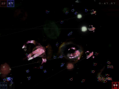
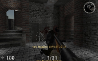
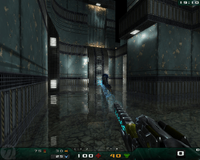
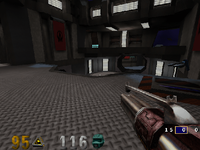
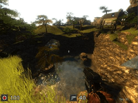
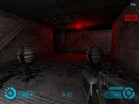
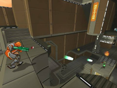

Egoshooter
Zum Verständnis dieses Artikels sind folgende Seiten hilfreich:
Ego-Shooter eignen sich immer für ein schnelles Spiel. Zusätzlich setzen meist die Vertreter dieses Genres neue Grafikmaßstäbe.
Adanaxis¶

Adanaxis  ist ein vierdimensionaler Weltraum-Shooter mit abstrakten Raumschiffen.
ist ein vierdimensionaler Weltraum-Shooter mit abstrakten Raumschiffen.
Benötigtes Paket:
adanaxisgpl
 mit apturl
mit apturl
Paketliste zum Kopieren:
sudo apt-get install adanaxisgpl
sudo aptitude install adanaxisgpl
Assault Cube¶

Assault Cube ist eine Modifizierung des First Person Shooters Cube. Das Spiel läuft auch auf älteren Rechnern relativ schnell und ist für verschiedene Plattformen verfügbar.
Weitere Informationen bietet der Artikel Spiele/AssaultCube.
Nexuiz¶
 Nexuiz ist ein klassischer First-Person-Shooter im Stile von Quake und Unreal Tournament.
Kurzbeschreibung: Es geht darum, möglichst viel Gegner im "Death Match" zu töten. Ein Spielprinzip, welches sich schon seit Jahrzehnten in Titeln wie "Quake", "Unreal Tournament", uvm. bewährt hat und in Nexuiz auf recht gelungene Weise mit ansehnlicher Grafik umgesetzt wurde.
Benötigtes Paket:
nexuiz (universe)
mit apturl
Paketliste zum Kopieren:
sudo apt-get install nexuiz
sudo aptitude install nexuiz
Openarena¶
 Openarena ist ein Quake III Klone.
Kurzbeschreibung: Openarena ist ein First-Person-Shooter mit einem Singleplayer (Bots) und einem Multiplayer (LAN/Internet) Modus, in welchem die Spielmodi Deathmatch, Team Deathmatch, Capture the Flag und Tournament spielbar sind.
Weitere Informationen bietet der Artikel OpenArena.
Sauerbraten¶
 Kurzbeschreibung: Sauerbraten ist ein First-Person-Shooter mit einem Singleplayer (Bots) und einem Multiplayer (LAN/Internet) Modus, in welchem die Spielmodi Deathmatch, Team Deathmatch, Capture the Flag und Tournament spielbar sind. Es stehen viele Maps zur Verfügung und ein Karteneditor ist eingebaut.
Weitere Informationen bietet der Artikel Spiele/Sauerbraten.
Tremulous¶
 Tremulous ist ein First-Person-Shooter mit strategischen Elementen.
Kurzbeschreibung: Tremulous ist ein First-Person-Shooter bei dem der Spieler zwischen den beiden Rassen Aliens und Menschen wählen kann. Eine Besonderheit ist, dass Spieler Gebäude errichten können, die unterschiedliche Wirkungen haben und das Spiel strategisch beeinflussen. Ziel des Spiels ist es alle gegnerischen Spawnpunkte zu zerstören und alle verbliebenen Gegner zu vernichten.
Mehr zum Spiel gibt es im Artikel Tremulous
Warsow¶
 Warsow ist ein Ego-Shooter basierend auf einer erweiterten Quake 2 Engine (Qfusion), die in einem comicartigen Stil gehalten ist. Das Spielprinzip ist vor allem an die Quake 3 Modifikation CPMA (Challenge Pro Mode Arena) angelehnt, wodurch Warsow ein sehr schneller Shooter mit viel Wert auf gutem Movement ist. Die Macher haben dabei vor allem Elemente aus der Quake und Unreal Tournament Reihe übernommen und kombiniert.
Weitere Informationen bietet der Artikel zu Warsow.
- Erstellt mit Inyoka
-
 2004 – 2017 ubuntuusers.de • Einige Rechte vorbehalten
2004 – 2017 ubuntuusers.de • Einige Rechte vorbehalten
Lizenz • Kontakt • Datenschutz • Impressum • Serverstatus -
Serverhousing gespendet von